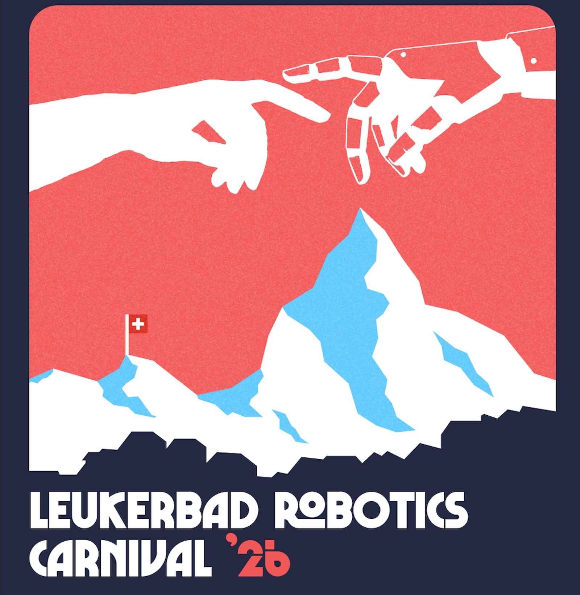

Hackathon · Resilient & Safe City
Find My Child
A drone finds the lost child. A robot stays with them until their family arrives.
- 1 · Parent sends a photo
- 2 · Drone searches
- 3 · Robot cares & calls
HoverAir X1 drone + Bobac ground robot
Hackathon · Resilient & Safe City
A drone finds the lost child. A robot stays with them until their family arrives.
HoverAir X1 drone + Bobac ground robot
